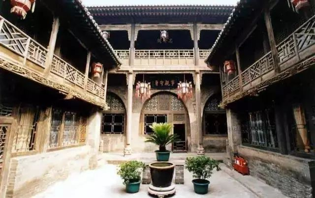
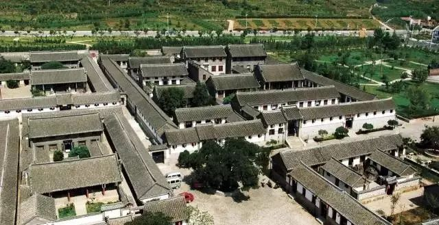
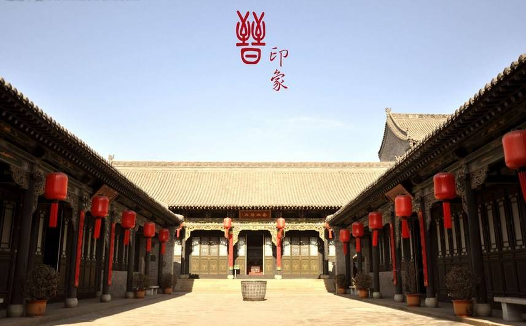
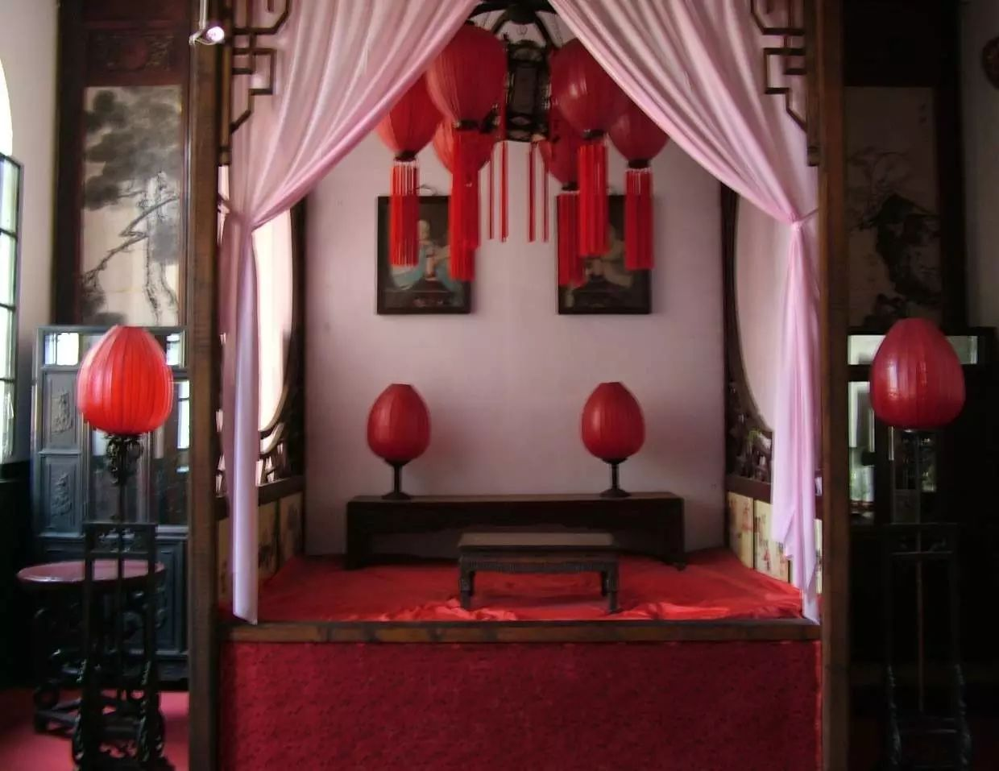

王家大院

王家大院位于山西省灵石县城东十二公里处的中国历史文化名镇静升镇。王家大院由静升王氏家族经明清两朝、历300余年修建而成，是一座具有汉族文化特色的建筑艺术博物馆。
恐怕中国没有哪一家有王家那么大了，王家大院的院子总面积在25万平方米以上，对游人开放的仅是建于乾隆、嘉庆年间的红门堡、高家崖两组建筑群，虽只占整个王家大院的五分之一，竟已容纳了百余座院落、千余间房屋，真不愧“民间故宫”的雅号。
—牟氏庄园

牟氏庄园，又称牟二黑庄园，坐落于山东省栖霞市城北古镇都村。牟氏庄园建筑结构严谨，紧固墩实，雄伟庄重，是中国北方规模最大、全国保存最为完整、最具典型性的封建地主庄园。牟氏庄园以其恢宏的规模、深沉的内涵，被诸多专家学者评价为“百年庄园之活化石”、“传统建筑之瑰宝”、“六百年旺气之所在”。
据记载，清朝康熙年间，牟氏先祖牟国珑按“左青龙、右白虎、前朱雀、后玄武”的地理特征，在这“背靠风彩山，面临月牙河”的古镇都村择就了这方“旺气之所在”的宝地，600年风雨之后，庄园“旺气”仍在。
乔家大院


乔家大院又名在中堂，位于山西省祁县乔家堡村，始建于1756年，是一座具有北方汉族传统民居建筑风格的古宅。
乔家大院设计之精巧，工艺之精细，体现了中国清代民居建筑的独特风格，具有相当高的观赏、科研和历史价值，是一座无与伦比的艺术宝库，被称为“北方民居建筑的一颗明珠”，素有“皇家有故宫，民宅看乔家”之说，名扬三晋，誉满海内外。